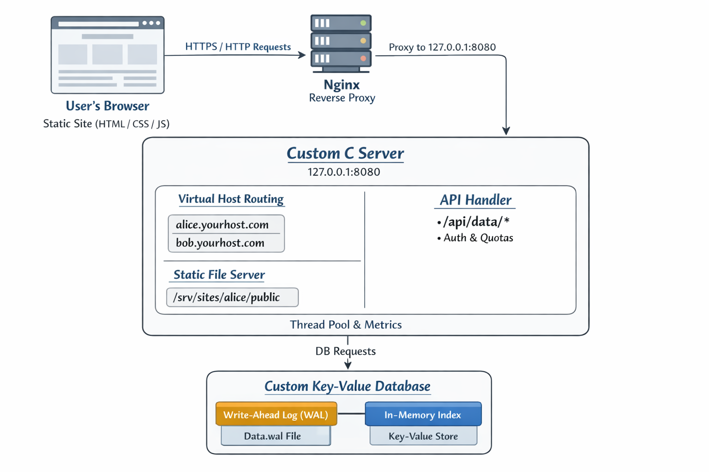

Hosty — Detailed Design Document
Table of Contents
- Overview
- Goals and Non-Goals
- Architecture
- HTTP Server Design
- Database Design
- Security Considerations
1. Overview
Hosty is a multi-tenant static website hosting platform written entirely in C, designed to allow multiple users to host static websites (HTML/CSS/JS) for free while also providing a lightweight backend API backed by a custom-built persistent database.
The project is intentionally low-level and infrastructure-focused. Instead of building an application (like an e-commerce site), Hosty builds the underlying systems: an HTTP server, a multi-tenant routing layer, a secure static file server, an authenticated API, and a durable storage engine.
This document specifies the full system architecture, components, data flow, storage format, concurrency model, and security considerations.
High-Level Architecture

2. Goals and Non-Goals
2.1 Goals
- Provide static website hosting for multiple tenants
- Support virtual hosting via subdomains (Host header)
- Expose a simple HTTP API usable by static frontend JavaScript
- Implement a custom persistent database (no external DB)
- Ensure tenant isolation and basic abuse protection
- Run as a single deployable service on a Linux VM
2.2 Non-Goals
- No server-side scripting (PHP, Python, Node)
- No SQL, joins, or complex queries
- No arbitrary user code execution
- No payment, billing, or user UI dashboards
- No high-availability or multi-node replication
3. High-Level Architecture
3.1 System Stack
Browser (HTML/CSS/JS)
↓ HTTPS
Nginx (TLS termination, reverse proxy)
↓ HTTP (localhost)
Custom C HTTP Server
├─ Virtual Host Resolver
├─ Request Router
├─ Static File Server
├─ API Layer
├─ Auth / Quotas / Rate Limiter
└─ Thread Pool
↓
Custom Key-Value Database (WAL + In-memory Index)
3.2 Deployment Model
- Single Linux VM (Oracle/AWS/GCP free tier)
- Nginx listens on ports 80/443
- Hosty listens on 127.0.0.1:8080
- Hosty runs as non-root via systemd
4. HTTP Server Design
4.1 Networking Layer
- Uses POSIX sockets
- TCP, IPv4
SO_REUSEADDRenabled- Configurable listen port
- Timeouts for read/write operations
4.2 Connection Handling
- One accept loop
- Accepted sockets are placed into a work queue
- Worker threads pull sockets and fully handle requests
4.3 Thread Pool
- Fixed-size pool (e.g. 4–8 threads)
- Shared queue protected by mutex + condition variable
- Prevents unbounded thread creation
5. HTTP Parsing
5.1 Supported Methods
- GET
- PUT
- DELETE
5.2 Parsing Rules
- Read until
\r\n\r\n(end of headers) - Enforce maximum header size (e.g. 16 KB)
-
Parse request line:
-
method
- path
- HTTP version
5.3 Header Handling
- Required:
Host - Optional:
Content-Length,Connection,X-API-Key - Unknown headers ignored
Malformed requests return 400 Bad Request.
6. Virtual Hosting (Multi-Tenancy)
6.1 Tenant Resolution
- Extract hostname from
Hostheader - Strip port if present
- Match
*.yourdomain.com - Leftmost label = tenant name
Example:
Host: alice.yourdomain.com → tenant = alice
6.2 Validation
- Allowed tenant characters:
[a-z0-9-]{1,32} - Invalid tenant → 400
6.3 Directory Mapping
/srv/sites/<tenant>/public/
7. Static File Server
7.1 File Resolution
/→/index.html- Paths resolved relative to tenant root
7.2 Security
- Reject
..after URL decoding - Never follow symlinks
- Enforce chroot-like behavior by path checks
7.3 Response
- Proper
Content-Type - Correct
Content-Length - Status codes: 200, 403, 404
8. API Layer
8.1 Routing
- Paths beginning with
/api/routed to API handler
8.2 Endpoints
| Method | Path | Description |
|---|---|---|
| PUT | /api/data/ |
Set value |
| GET | /api/data/ |
Get value |
| DELETE | /api/data/ |
Delete value |
8.3 Key Rules
- Allowed key chars:
[A-Za-z0-9._-]{1,64} - Max value size (e.g. 64 KB)
9. Authentication & Authorization
9.1 API Keys
- Each tenant has an API key
- Passed via
X-API-Keyheader - Stored hashed (SHA-256)
9.2 Authorization
- Tenant determined by Host header
- API key must match tenant
- No cross-tenant access possible
10. Rate Limiting & Quotas
10.1 Rate Limiting
- Token bucket per tenant
- Limits API request rate
10.2 Storage Quotas
- Max bytes per tenant
- Enforced during writes
11. Custom Database Design
11.1 Overview
- Single-node embedded KV store
- Append-only write-ahead log (WAL)
- In-memory hash table index
11.2 Record Format
Each record contains:
- magic number
- version
- flags (SET / DEL)
- tenant length
- key length
- value length
- tenant bytes
- key bytes
- value bytes
- CRC32 checksum
11.3 Operations
- SET: append record + update index
- GET: lookup index + read WAL offset
- DEL: append tombstone
11.4 Recovery
- On startup, replay WAL sequentially
- Verify CRC
- Rebuild index
11.5 Concurrency
- Global read-write lock
- GET = read lock
- PUT/DEL = write lock
12. Logging & Metrics
12.1 Access Logs
- Timestamp
- Tenant
- Method
- Path
- Status
- Latency
12.2 Metrics Endpoint
/metrics- Requests total
- API requests
- Error counts
- Average latency
13. Error Handling Strategy
- Fail fast on malformed input
- Never crash on user input
- Graceful shutdown on SIGINT
- Always fsync WAL before ACK
14. Security Considerations
- Run as non-root
- Input validation everywhere
- No dynamic code execution
- No file uploads via HTTP
- Nginx handles TLS
15. Future Enhancements (Optional)
- WAL compaction
- Keep-alive connections
- HTTP range requests
- Directory auto-index
- Git-based deployments
16. Summary
Hosty demonstrates low-level systems engineering by building a complete hosting stack from scratch in C: networking, HTTP, multi-tenancy, security, persistence, and deployment. It is intentionally scoped to be small, safe, and educational while remaining realistic and production-inspired.